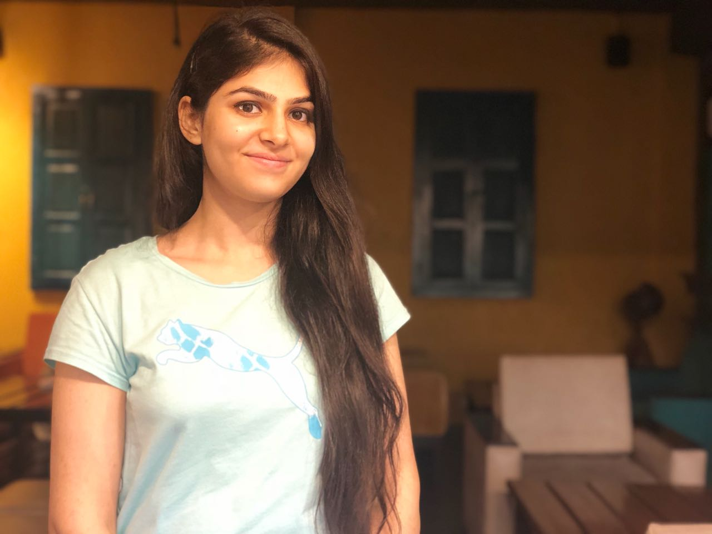

Jaspal
Home Away From Home
First Time in Bangalore?
A journey of one year Being first time away from home, I was in search of a place which resembled my home, my hometown, everything that kept me away from the feeling of being "Homesick". So, in Bangalore itself, I started looking for another Punjab. We punjabis are known to be a foodie, so yeah, everything started from there onwards.. Search for food! Good and apetizing gourmet! Nevertheless, What is Bangalore known for? I can't neglect that.. Lakes, Monuments, Pubs, TechParks, so much to be explored yet. Here on this webpage I have shared a few must try-ons on your visit to this lively metro-city.